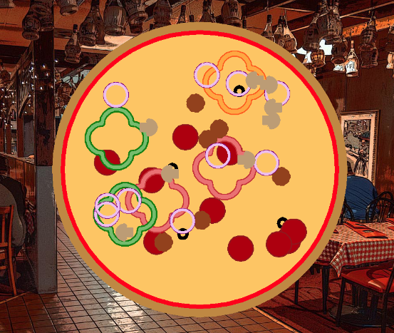
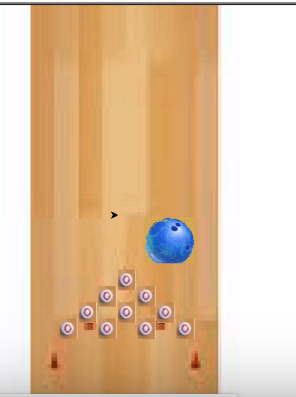
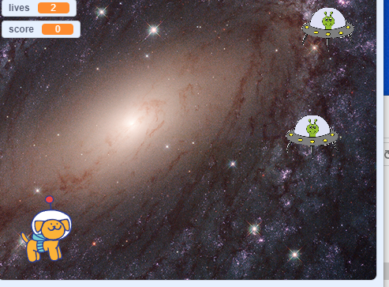

Home
Portfolio
About Me
my portfolio!
papa luigi's pizzeria!
We created a game that lets you personalize your pizza by choosing from a variety of pizza toppings and even deciding the amounts for each topping. The toppings are then randomly placed on the pizza.

blue ball for college!
Our game is based on a bowling game where the player can move the blue bowling ball left and right using keys and press the space bar to bowl the ball. Each pin in the game stands for a college and the user gets into the college of the respective pin they knock.

space invaders!
The goal of our game is to shoot down the aliens that are trying to invade our world. You can move the character using the left and right keys and then using your mouse to aim, you can press the top arrow key to shoot lasers at the aliens. You have three lives in case an alien hits your character and at the end, depending on your score, you will be awarded a medal.

Black Jack game written in Python.
Modified bits in pictures.
Use data files to create graphs.
Using netlogo do remix of illusions.
Interactive Fiction Rags to Riches.